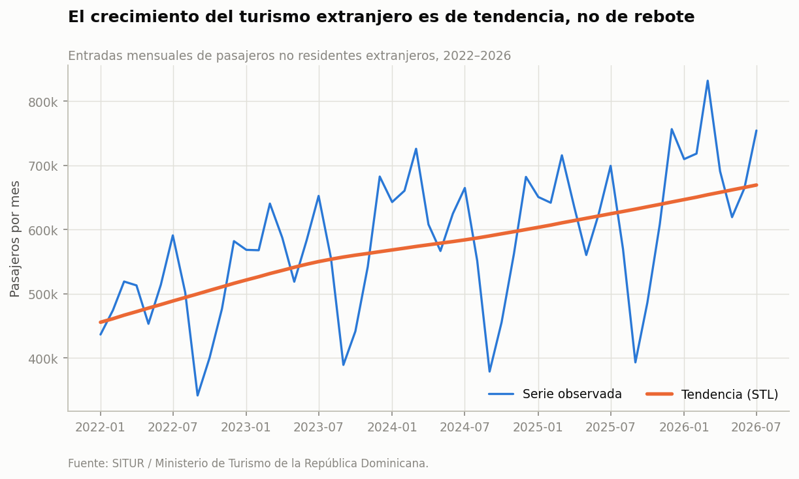
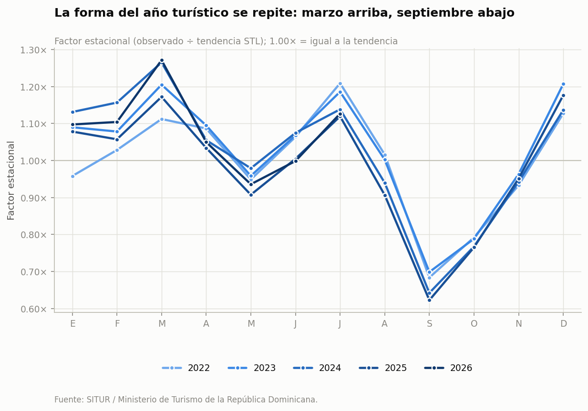
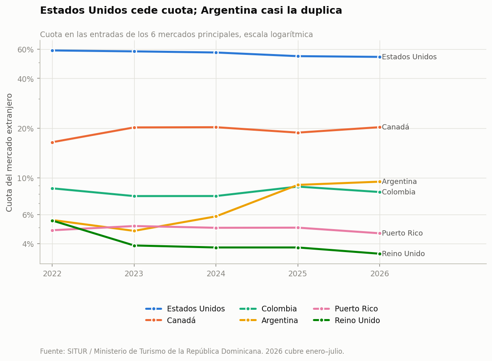
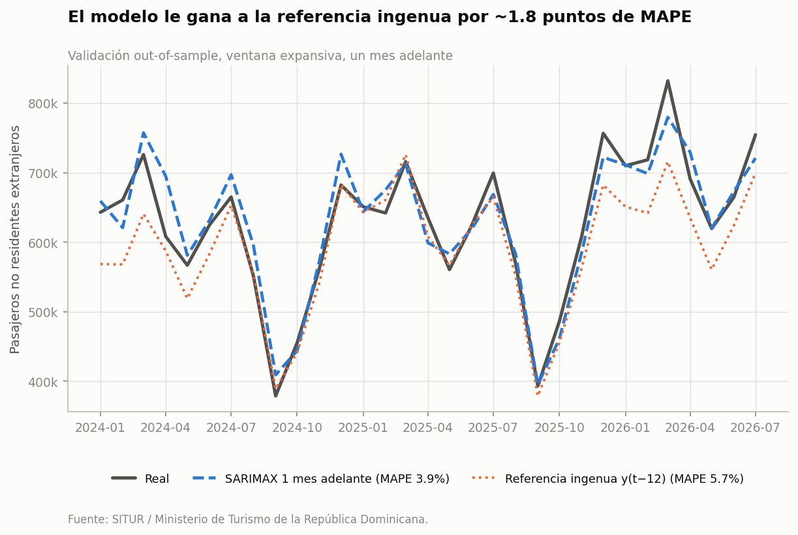
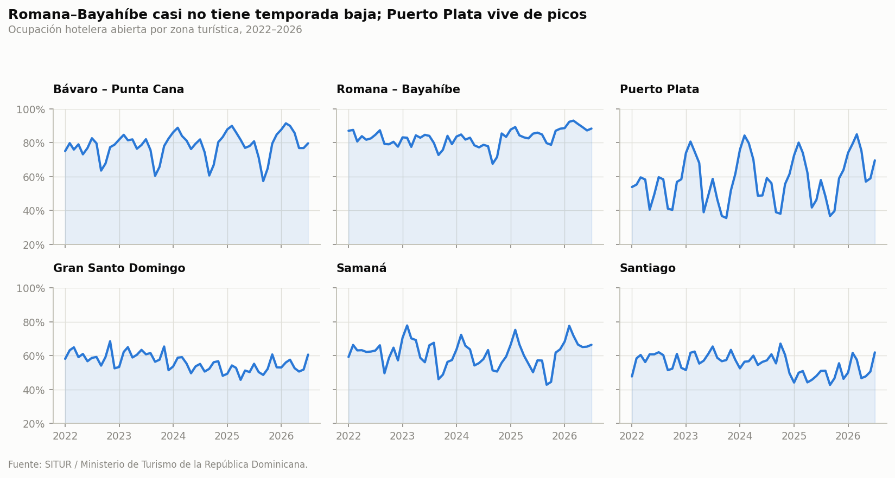

<title>Turismo dominicano 2022–2026</title>
<link rel="stylesheet" href="https://fonts.googleapis.com/css2?family=Newsreader:ital,opsz,wght@0,6..72,400;0,6..72,500;0,6..72,600;1,6..72,400&family=IBM+Plex+Mono:wght@400;500;600&family=IBM+Plex+Sans:wght@400;450;500;600&display=swap">

<style>
  :root {
    color-scheme: light;
    --paper:        #f5f8f7;
    --card:         #ffffff;
    --plate:        #fcfcfb;
    --ink:          #12211f;
    --ink-2:        #334743;
    --muted:        #64756f;
    --rule:         #d9e3e0;
    --rule-soft:    #e7eeec;
    --accent:       #0d5c63;
    --accent-ink:   #0a4a50;
    --accent-wash:  #e6f0ef;
    --plate-ring:   rgba(18, 33, 31, 0.10);
    --shadow:       0 1px 2px rgba(18,33,31,.05), 0 8px 24px -14px rgba(18,33,31,.18);

    --f-display: "Newsreader", "Iowan Old Style", Georgia, serif;
    --f-body:    "IBM Plex Sans", "Segoe UI", system-ui, sans-serif;
    --f-mono:    "IBM Plex Mono", ui-monospace, "SF Mono", Menlo, monospace;
  }

  @media (prefers-color-scheme: dark) {
    :root:not([data-theme="light"]) {
      color-scheme: dark;
      --paper:       #0e1413;
      --card:        #151d1c;
      --plate:       #f4f5f3;
      --ink:         #eef2f1;
      --ink-2:       #c2cfcb;
      --muted:       #8fa39e;
      --rule:        #26322f;
      --rule-soft:   #1e2827;
      --accent:      #5cbdb4;
      --accent-ink:  #7fd0c7;
      --accent-wash: #162523;
      --plate-ring:  rgba(255, 255, 255, 0.14);
      --shadow:      0 1px 2px rgba(0,0,0,.3), 0 10px 28px -16px rgba(0,0,0,.6);
    }
  }

  :root[data-theme="dark"] {
    color-scheme: dark;
    --paper:       #0e1413;
    --card:        #151d1c;
    --plate:       #f4f5f3;
    --ink:         #eef2f1;
    --ink-2:       #c2cfcb;
    --muted:       #8fa39e;
    --rule:        #26322f;
    --rule-soft:   #1e2827;
    --accent:      #5cbdb4;
    --accent-ink:  #7fd0c7;
    --accent-wash: #162523;
    --plate-ring:  rgba(255, 255, 255, 0.14);
    --shadow:      0 1px 2px rgba(0,0,0,.3), 0 10px 28px -16px rgba(0,0,0,.6);
  }

  * { box-sizing: border-box; }

  body {
    margin: 0;
    background: var(--paper);
    color: var(--ink);
    font-family: var(--f-body);
    font-size: 16.5px;
    line-height: 1.62;
    -webkit-font-smoothing: antialiased;
  }

  .wrap {
    max-width: 1060px;
    margin: 0 auto;
    padding-inline: 20px;
    padding-block: 0;
  }

  .measure { max-width: 66ch; }

  a { color: var(--accent-ink); text-underline-offset: 2px; text-decoration-thickness: 1px; }
  a:focus-visible { outline: 2px solid var(--accent); outline-offset: 3px; border-radius: 2px; }

  .eyebrow {
    font-family: var(--f-mono);
    font-size: 11.5px;
    font-weight: 500;
    letter-spacing: .12em;
    text-transform: uppercase;
    color: var(--muted);
  }

  /* ---------------------------------------------------------------- header */
  header.masthead {
    border-bottom: 1px solid var(--rule);
    padding-block: 56px 40px;
  }
  h1 {
    font-family: var(--f-display);
    font-optical-sizing: auto;
    font-weight: 500;
    font-size: clamp(2.4rem, 6.2vw, 4.1rem);
    line-height: 1.02;
    letter-spacing: -0.018em;
    text-wrap: balance;
    margin: 14px 0 0;
  }
  h1 .light { color: var(--muted); font-style: italic; font-weight: 400; }

  .thesis {
    font-family: var(--f-display);
    font-size: clamp(1.12rem, 2.3vw, 1.38rem);
    line-height: 1.5;
    color: var(--ink-2);
    margin: 22px 0 0;
    max-width: 56ch;
  }

  .byline {
    display: flex;
    flex-wrap: wrap;
    gap: 8px 26px;
    margin-top: 30px;
    font-family: var(--f-mono);
    font-size: 12.5px;
    color: var(--muted);
  }
  .byline b { color: var(--ink-2); font-weight: 500; }

  /* ------------------------------------------------------------- kpi strip */
  .kpis {
    display: grid;
    grid-template-columns: repeat(4, 1fr);
    gap: 1px;
    background: var(--rule);
    border-bottom: 1px solid var(--rule);
  }
  .kpi { background: var(--paper); padding: 26px 22px 24px; }
  .kpi .val {
    font-family: var(--f-mono);
    font-size: clamp(1.65rem, 4vw, 2.1rem);
    font-weight: 500;
    letter-spacing: -0.02em;
    color: var(--accent-ink);
    display: block;
    line-height: 1.1;
  }
  .kpi .lbl { display: block; margin-top: 9px; font-size: 13.5px; color: var(--ink-2); line-height: 1.4; }
  .kpi .sub { display: block; margin-top: 4px; font-size: 12px; color: var(--muted); }

  /* -------------------------------------------------------------- findings */
  .finding { padding-block: 62px; border-bottom: 1px solid var(--rule-soft); }
  .finding:last-of-type { border-bottom: 1px solid var(--rule); }

  .f-head { display: flex; align-items: baseline; gap: 14px; }
  .f-num {
    font-family: var(--f-mono);
    font-size: 12px;
    font-weight: 600;
    color: var(--accent);
    letter-spacing: .08em;
  }
  h2 {
    font-family: var(--f-display);
    font-weight: 500;
    font-size: clamp(1.6rem, 3.4vw, 2.15rem);
    line-height: 1.15;
    letter-spacing: -0.014em;
    text-wrap: balance;
    margin: 0;
    max-width: 24ch;
  }
  .finding > p { margin: 18px 0 0; color: var(--ink-2); }
  .finding > p.measure + p.measure { margin-top: 14px; }

  figure {
    margin: 34px 0 0;
    background: var(--plate);
    border: 1px solid var(--plate-ring);
    border-radius: 3px;
    padding: 14px 14px 10px;
    box-shadow: var(--shadow);
  }
  figure img { display: block; width: 100%; max-width: 100%; height: auto; }
  figcaption {
    font-family: var(--f-mono);
    font-size: 11.5px;
    line-height: 1.5;
    color: #6a716b;
    padding: 10px 4px 2px;
    border-top: 1px solid rgba(18,33,31,.08);
    margin-top: 10px;
  }

  /* ------------------------------------------------- decision / measurement */
  .act {
    margin-top: 34px;
    display: grid;
    grid-template-columns: 1fr 1fr;
    gap: 1px;
    background: var(--rule);
    border: 1px solid var(--rule);
    border-left: 3px solid var(--accent);
    border-radius: 2px;
    overflow: hidden;
  }
  .act > div { background: var(--card); padding: 20px 22px 22px; }
  .act h3 {
    font-family: var(--f-mono);
    font-size: 11px;
    font-weight: 600;
    letter-spacing: .13em;
    text-transform: uppercase;
    color: var(--accent);
    margin: 0 0 10px;
  }
  .act p { margin: 0; font-size: 15.2px; line-height: 1.55; color: var(--ink-2); }

  /* ----------------------------------------------------------------- notes */
  .notes { padding-block: 58px; }
  h3.sec {
    font-family: var(--f-display);
    font-weight: 500;
    font-size: 1.55rem;
    letter-spacing: -0.012em;
    margin: 0 0 6px;
  }
  .cols {
    display: grid;
    grid-template-columns: repeat(auto-fit, minmax(250px, 1fr));
    gap: 30px 40px;
    margin-top: 30px;
  }
  .cols h4 {
    font-family: var(--f-mono);
    font-size: 11.5px;
    font-weight: 600;
    letter-spacing: .1em;
    text-transform: uppercase;
    color: var(--muted);
    margin: 0 0 10px;
    padding-bottom: 8px;
    border-bottom: 1px solid var(--rule);
  }
  .cols p { margin: 0 0 12px; font-size: 14.6px; line-height: 1.58; color: var(--ink-2); }
  .cols p:last-child { margin-bottom: 0; }
  code {
    font-family: var(--f-mono);
    font-size: .88em;
    background: var(--accent-wash);
    color: var(--accent-ink);
    padding: 1px 5px;
    border-radius: 3px;
  }

  .caveat {
    margin-top: 34px;
    padding: 20px 24px;
    background: var(--accent-wash);
    border-radius: 3px;
  }
  .caveat p { margin: 0; font-size: 14.8px; line-height: 1.6; color: var(--ink-2); }
  .caveat b { color: var(--ink); font-weight: 600; }

  /* ---------------------------------------------------------------- footer */
  footer {
    border-top: 1px solid var(--rule);
    padding-block: 40px 64px;
    display: flex;
    flex-wrap: wrap;
    gap: 24px 48px;
    justify-content: space-between;
    align-items: flex-start;
  }
  footer p { margin: 8px 0 0; font-size: 14px; color: var(--muted); max-width: 46ch; }
  .stack { font-family: var(--f-mono); font-size: 12.5px; color: var(--muted); line-height: 1.9; }

  @media (max-width: 860px) {
    .kpis { grid-template-columns: repeat(2, 1fr); }
  }
  @media (max-width: 620px) {
    body { font-size: 16px; }
    header.masthead { padding-block: 40px 32px; }
    .finding { padding-block: 44px; }
    .act { grid-template-columns: 1fr; }
    figure { padding: 10px 10px 8px; }
  }
</style>

<header class="masthead">
  <div class="wrap">
    <span class="eyebrow">Análisis de datos abiertos · enero 2022 – julio 2026</span>
    <h1>Turismo dominicano <span class="light">2022–2026</span></h1>
    <p class="thesis">
      El sector creció casi 47% en cuatro años y medio. La pregunta no es si creció,
      sino si cambió: cuándo llega la gente, de dónde viene y qué tan bien se puede
      anticipar el próximo mes.
    </p>
    <div class="byline">
      <span><b>55 meses</b> de datos mensuales</span>
      <span><b>135 países</b> de origen</span>
      <span>Fuentes: <b>SITUR / MITUR</b> y <b>Banco Central</b></span>
    </div>
  </div>
</header>

<section class="kpis" aria-label="Indicadores principales">
  <div class="kpi">
    <span class="val">+46.9%</span>
    <span class="lbl">Crecimiento de la tendencia</span>
    <span class="sub">Descomposición STL, 4.5 años</span>
  </div>
  <div class="kpi">
    <span class="val">−35%</span>
    <span class="lbl">Septiembre frente a la tendencia</span>
    <span class="sub">Se repite todos los años</span>
  </div>
  <div class="kpi">
    <span class="val">53.9%</span>
    <span class="lbl">Cuota de Estados Unidos</span>
    <span class="sub">Era 59.0% en 2022</span>
  </div>
  <div class="kpi">
    <span class="val">3.9%</span>
    <span class="lbl">Error del pronóstico a un mes</span>
    <span class="sub">MAPE, validación out-of-sample</span>
  </div>
</section>

<main class="wrap">

  <!-- ---------------------------------------------------------------- 1 -->
  <article class="finding">
    <div class="f-head">
      <span class="f-num">01</span>
      <h2>El crecimiento es estructural, no rebote</h2>
    </div>
    <p class="measure">
      El nivel mensual por sí solo no dice nada: marzo siempre es alto y septiembre
      siempre es bajo. Al separar la serie en tendencia, estacionalidad y resto con
      una descomposición STL robusta, la tendencia sube de forma casi lineal —de
      456 mil a 670 mil pasajeros al mes— sin la curva de saturación que tendría un
      simple rebote post-pandemia.
    </p>
    <figure>
      
      <figcaption>Entradas mensuales de pasajeros no residentes extranjeros. Fuente: SITUR / MITUR.</figcaption>
    </figure>
    <div class="act">
      <div>
        <h3>Decisión</h3>
        <p>
          La restricción a vigilar es de capacidad —habitaciones y asientos—, no de
          demanda. La pregunta de planificación deja de ser «cómo atraemos más» y pasa
          a ser «dónde se satura primero».
        </p>
      </div>
      <div>
        <h3>Cómo medirlo</h3>
        <p>
          Seguir la disponibilidad efectiva hotelera contra la tendencia de llegadas.
          Si la ocupación sube mientras la disponibilidad se estanca, la capacidad ya
          es el cuello de botella.
        </p>
      </div>
    </div>
  </article>

  <!-- ---------------------------------------------------------------- 2 -->
  <article class="finding">
    <div class="f-head">
      <span class="f-num">02</span>
      <h2>La estacionalidad no se aplanó</h2>
    </div>
    <p class="measure">
      Si el sector se estuviera desestacionalizando, la distancia entre el mejor y el
      peor mes se achicaría año con año. No pasa: la amplitud del factor estacional se
      mantiene entre 0.51 y 0.62 en todos los años completos. Las cinco curvas casi se
      superponen.
    </p>
    <p class="measure">
      El sector creció de nivel manteniendo intacto su calendario. Marzo por encima de
      la tendencia, septiembre un 35% por debajo, todos los años.
    </p>
    <figure>
      
      <figcaption>Factor estacional (observado ÷ tendencia STL); 1.00× equivale a la tendencia.</figcaption>
    </figure>
    <div class="act">
      <div>
        <h3>Decisión</h3>
        <p>
          Lo que se esté haciendo para llenar la temporada baja no está moviendo la
          aguja. Antes de repetir el gasto en lo mismo, hay que poder medirlo.
        </p>
      </div>
      <div>
        <h3>Cómo medirlo</h3>
        <p>
          La amplitud del factor estacional por año es el indicador, hoy en ~0.55. Una
          campaña que sirva la baja de forma sostenida durante dos o tres años; un
          septiembre bueno suelto no prueba nada.
        </p>
      </div>
    </div>
  </article>

  <!-- ---------------------------------------------------------------- 3 -->
  <article class="finding">
    <div class="f-head">
      <span class="f-num">03</span>
      <h2>La diversificación es real, pero es sudamericana</h2>
    </div>
    <p class="measure">
      El índice Herfindahl-Hirschman de los mercados de origen subió hasta mediados de
      2024 y luego volvió casi al punto de partida: de 4.9 mercados equivalentes a 4.1
      y de vuelta a 4.8. Un índice agregado esconde el movimiento; hay que mirar quién
      se mueve.
    </p>
    <figure>
      
      <figcaption>Cuota en las entradas de los 6 mercados principales, escala logarítmica. 2026 cubre enero–julio.</figcaption>
    </figure>
    <p class="measure">
      Ahí está la historia: <b>Estados Unidos cede cinco puntos de cuota</b> y los
      absorbe Sudamérica, sobre todo Argentina, que casi duplica la suya. Europa va en
      la dirección contraria —el Reino Unido cae de 5.5% a 3.5%.
    </p>
    <div class="act">
      <div>
        <h3>Decisión</h3>
        <p>
          El margen barato está en acompañar la corriente que ya existe —conectividad y
          promoción hacia el Cono Sur— en vez de intentar recuperar Europa. Y tiene un
          beneficio cruzado: el verano austral cae en la temporada baja del norte, así
          que el hallazgo 02 se resuelve en parte por esta vía.
        </p>
      </div>
      <div>
        <h3>Cómo medirlo</h3>
        <p>
          Cuota sudamericana y HHI en paralelo. Si la cuota sube pero el HHI no baja,
          se está cambiando una dependencia por otra, no diversificando.
        </p>
      </div>
    </div>
  </article>

  <!-- ---------------------------------------------------------------- 4 -->
  <article class="finding">
    <div class="f-head">
      <span class="f-num">04</span>
      <h2>El mes siguiente se pronostica con 3.9% de error</h2>
    </div>
    <p class="measure">
      En series de tiempo toda predicción compite contra la referencia ingenua —el mismo
      mes del año anterior— y se valida con ventana expansiva, reajustando el modelo en
      cada paso con solo el pasado. Una partición aleatoria filtraría el futuro dentro
      del entrenamiento y daría un error falsamente bajo.
    </p>
    <p class="measure">
      Un SARIMAX simple baja el error de 5.7% a <b>3.9%</b>, un tercio mejor. Y un
      resultado negativo que vale la pena reportar: agregar los vuelos regulares como
      regresor exógeno <b>empeora</b> el modelo, hasta 4.3%. Con 55 observaciones, más
      parámetros cuestan más de lo que aportan.
    </p>
    <figure>
      
      <figcaption>Validación out-of-sample, ventana expansiva, un mes adelante. 31 pronósticos.</figcaption>
    </figure>
    <div class="act">
      <div>
        <h3>Decisión</h3>
        <p>
          Ese error ya es operativamente útil para planificar personal, compras y turnos
          con un mes de anticipación. No hace falta un modelo más complejo: hace falta
          más historia y horizontes más largos.
        </p>
      </div>
      <div>
        <h3>Cómo medirlo</h3>
        <p>
          Seguir el MAPE mes a mes contra la referencia ingenua. El día que el modelo
          deje de ganarle, algo cambió en el régimen y toca reestimarlo.
        </p>
      </div>
    </div>
  </article>

  <!-- --------------------------------------------------------- zonas extra -->
  <article class="finding">
    <div class="f-head">
      <span class="f-num">05</span>
      <h2>Cada polo turístico tiene su propio calendario</h2>
    </div>
    <p class="measure">
      El promedio nacional esconde ocho realidades distintas. Romana–Bayahíbe
      prácticamente no tiene temporada baja: vive del todo incluido y se mantiene por
      encima del 75% casi todo el año. Puerto Plata vive de picos, entre 35% y 85%.
      Gran Santo Domingo, que es turismo de negocios, se mueve en una banda estrecha y
      baja.
    </p>
    <figure>
      
      <figcaption>Ocupación hotelera abierta por zona turística. Fuente: SITUR / MITUR.</figcaption>
    </figure>
    <div class="caveat">
      <p>
        <b>Un sexto resultado quedó fuera de estas recomendaciones a propósito.</b>
        El análisis incluye un panel con efectos fijos de zona y mes que estima cuánto
        mueve el flujo aéreo de un aeropuerto la ocupación de su zona: +10% de llegadas
        ≈ +0.76 puntos de ocupación, significativo al 5%. Pero descansa en solo seis
        clusters, la relación es endógena —las aerolíneas ponen capacidad donde ya hay
        demanda— y el mapeo aeropuerto→zona lo armé yo, no es oficial. Da para una
        hipótesis que vale la pena probar con mejores datos, no para recomendar nada.
      </p>
    </div>
  </article>

  <!-- --------------------------------------------------------------- notas -->
  <section class="notes">
    <h3 class="sec">Cómo está hecho</h3>
    <p class="measure" style="color:var(--ink-2); margin-top:0;">
      Todo el proyecto es reproducible de punta a punta: descarga, limpieza, análisis y
      figuras.
    </p>

    <div class="cols">
      <div>
        <h4>Los datos no venían limpios</h4>
        <p>
          Los Excel de SITUR traen el logo institucional, títulos en las primeras filas,
          encabezados en dos niveles con celdas combinadas, el año escrito una sola vez
          por bloque de doce meses, meses en español y notas al pie.
        </p>
        <p>
          <code>pd.read_excel()</code> directo devuelve basura. El parser localiza la
          fila <code>Año | Mes</code>, reconstruye los nombres combinando los niveles
          superiores, arrastra el año hacia abajo y descarta las notas.
        </p>
      </div>
      <div>
        <h4>Qué cuenta como turista</h4>
        <p>
          El dato oficial separa residencia de nacionalidad. Un dominicano de la
          diáspora que viene de visita es <i>no residente dominicano</i>: entra en las
          llegadas, pero su pico es diciembre, no marzo, y su patrón de gasto es otro.
        </p>
        <p>
          Son el 16.9% del flujo. El análisis usa <i>no residentes extranjeros</i> y los
          trata aparte.
        </p>
      </div>
      <div>
        <h4>Decisiones metodológicas</h4>
        <p>
          STL robusto en lugar de descomposición clásica, para que los meses atípicos no
          arrastren el componente estacional.
        </p>
        <p>
          Validación con ventana expansiva, nunca partición aleatoria. Toda predicción
          compite contra <code>y(t−12)</code>: un modelo que no le gana al mismo mes del
          año anterior no aporta nada.
        </p>
      </div>
      <div>
        <h4>Límites conocidos</h4>
        <p>
          Cincuenta y cinco meses alcanzan para estacionalidad y pronóstico a un mes; no
          para afirmaciones de ciclo largo. Para eso hay que enganchar las series del
          Banco Central, que llegan hasta 1978.
        </p>
        <p>
          El siguiente paso natural es traer el gasto por turista: pasar de «cuántos
          vienen» a «cuánto dejan» reordena el ranking de mercados.
        </p>
      </div>
    </div>
  </section>

  <footer>
    <div>
      <span class="eyebrow">Proyecto</span>
      <p>
        Análisis independiente sobre datos abiertos de la Oficina Nacional de
        Estadística, el Ministerio de Turismo y el Banco Central de la República
        Dominicana. El código, los datos procesados y el notebook completo están en el
        repositorio.
      </p>
    </div>
    <div class="stack">
      <span class="eyebrow">Herramientas</span><br>
      Python · pandas · statsmodels<br>
      STL · SARIMAX · OLS con efectos fijos<br>
      matplotlib
    </div>
  </footer>

</main>
